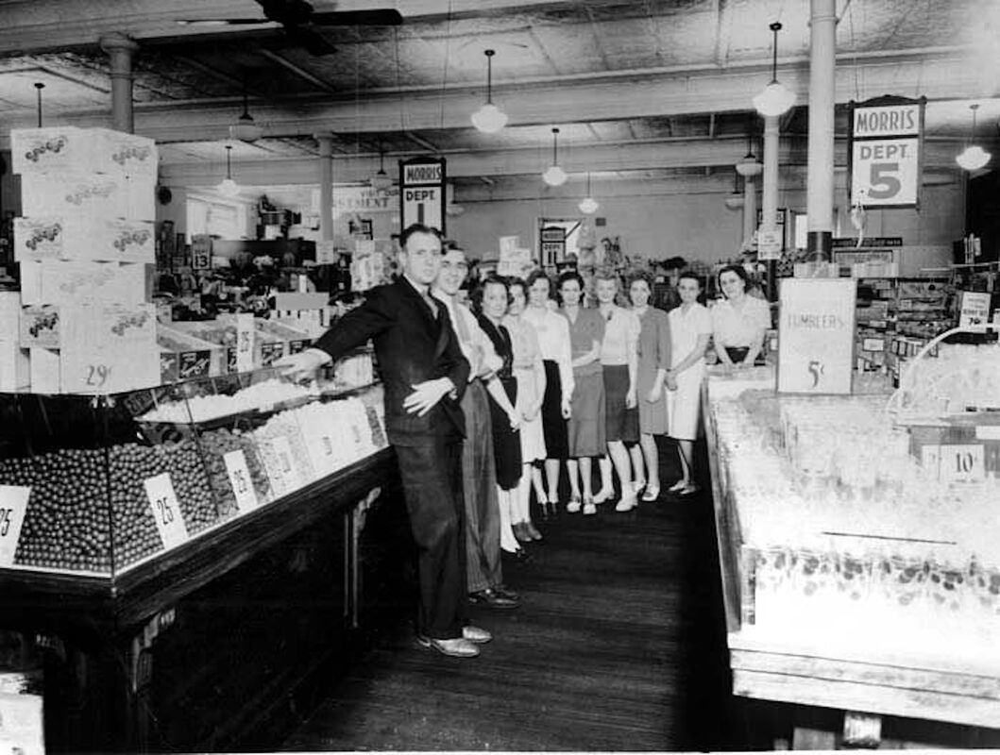
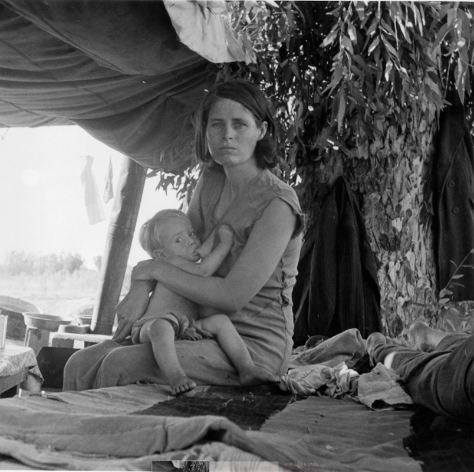

The Great Depression
© 2020 Hannah Clayborn All Rights Reserved
|
The Great Depression. Even the name is chilling. To those who learned about it from weighty textbooks, the Great Depression was a terrifying era when the flame of democracy almost blew out, and Capitalism right along with it. Consider the global scene: a rising tide of barbaric imperialism—in Nazi Germany, militarist Japan, Stalinist Russia—threatened to wash away our "American Way of Life". Intellectuals and diplomats like Joseph P. Kennedy predicted nothing less than the decline of civilized Western society. The economic collapse in the United States seemed like one symptom of a much larger sickness, one that might well be terminal.
What was the Great Depression like in the rural town of Healdsburg? I did not find frightened, huddled masses and forlorn unemployed. I did find people meeting unusual challenges, finding ingenious solutions, making do, and generally helping each other out when they could. Jobs Were Like Gifts Even though it sounds like everyone held down at least two positions in the 1930s, jobs were scarce. That's what everyone talked about: what jobs were where and when they would be available, says Marda Mitchell. Alice Burgett, whose brick-mason husband felt the brunt of the collapsed building industry, says, Jobs were more like gifts than anything else. Alice also remembered the time that she and her husband and brother-in-law went to the funeral of a friend. Her brother-in-law left in the middle of the ceremony because he had to apply for the job of the dear departed. That's the way it was then. says Alice. The unemployed scoured the county for the occasional odd job. Marda's father worked where and when he could to support the family—factories, farm maintenance, overseeing. Some men did go for long stretches without work. When Marda's father worked as a factory foreman he remembered hiring a man who asked for a 15-cent advance so that he could eat breakfast before he started work. The photos above of hop pickers on the Wohler Ranch west of Healdsburg are dated as the 1920s in the Sonoma County Library collection. But they have the distinct look of photographs commissioned in the mid-1930s by the U.S. Resettlement Administration, part of Franklin Roosevelt's "New Deal".
$2 Dollars for a 10-hour Day
The base wage for women and unskilled workers was $2 for a 10-hour day. Grace Bros. Brewery in Santa Rosa, at the high end of the scale, offered $5 a day. Long lines would form outside the plant whenever they hired. Despite hard times, people had to buy things, so jobs in department stores were plentiful. Healdsburg's only department store, Rosenberg & Bush, had a reputation as a benevolent employer, although their wage scale was modest, $12 for a 60-hour week. Even these stores had to make adjustments for the Depression, enlarging their yardage departments to offset the shrinking ready-to-wear clothing market. Chain Stores Took Advantage It has been reported that the large chain department stores in Santa Rosa sometimes took advantage of their desperate employees. Knowing that workers were unlikely to quit, management pressed them for more work. Management also required employees to work part of their unpaid lunch hour in stock rooms or gathering prices from competitors. Trainees were expected to work unpaid evenings in the stockroom as well. It is alleged that the chain stores liked to hire married men with no children, thus gaining the unpaid labor of their wives in the evening. Outrageous practices such as these helped fuel the tremendous labor union movement of the 1930s.  Most Department stores were "Depression Proof", but jobs were so scarce they could demand 60-hour work weeks for low wages.
Depression Proof
It is important to note that not everyone suffered in the Great Depression. Some businesses were "Depression proof". Rossaline Maher's husband ran a saddle repair shop in Healdsburg. His business actually increased, as more families patched up old saddles and leather trappings for use on the farm. Doctors and dentists were still in demand, although many had to settle for bartered goods like prunes, meat, or other food in payment for their services. The good news about the Depression was the price of things. It did not cost much to live. Marda was a college student in the 1930s. She remembers living comfortably on $30 a month, half from her parents and half from her job as a librarian under the government funded National Youth Administration (NYA). Many people lived on much less. Bread was 10 cents a loaf; 5 cents would buy you a bunch of bananas or two bunches of carrots. Marda recently rediscovered her mother's Depression-era recipe for Tamale Loaf. Among other things it called for 15 cents worth of hamburger, which at the time would have been a pound or more. Marda figures that loaf fed eight people for a grand total of 68 cents. An economical street dress (and no "lady" wore trousers!) would put you back a buck. Teens Worked Most of our informants held down at least one or two evening, weekend, or summer jobs while they were still in high school. Teenager Bob Jones felt lucky to be making 10 cents an hour at the Miller Fruit Packing Company in 1932. Later he must have felt like a real wage earner when he pulled in $15 a week working for a local grocer. But that's a 60-hour week. High school student Carl Flournoy worked nights and Sundays at the old Plaza Theater. Movies were another "Depression proof" business, as people sought an escape from their cares and woes. Carl remembers admission prices: 10 cents for kids, 25 cents for students, 35 cents for adults. Even at those prices, theater owner Larry Killingsworth offered "Bank Night" every Wednesday evening. Long lines of hopeful moviegoers would form a line down the block as the lottery cash prize increased by $25 increments each week. Sometimes a lucky winner took home $100 or more. Like many other young people, Carl used the $5 he earned each week at the Plaza Theater to help support his family. His wages mainly bought clothes for his sisters. Young girls worked too, if they weren't too busy minding the babes while Mama held down a cannery job. As now, baby-sitting was an opportunity, but they also picked prunes and became cannery and packinghouse workers along with their brothers.
Tramps and Hobo Camps
No one remembers any homeless or starving locals. Everyone scraped by and occasionally helped the less fortunate. They do remember the transient homeless, the "tramps", single men who rode the rails from town to town looking for work and food. Marda, who lived near the Santa Rosa depot remembers groups of men jumping from freight cars to gather around evening bonfires. Some would go to a nearby tree and pull out a piece of paper giving directions to homes that were good for a meal. Rena Phillips, whose father ran Buffi's Inn and Restaurant down by the Healdsburg Railroad Depot, recalls that tramps would come to the back door asking for a potato or an onion. It always smelled so good at the hobo camps, things cooking in open pots," she says. (Buffi's Inn was moved to 146 Healdsburg Ave. in 1937.) Some of these single men camped for days or weeks under the Russian River bridges, especially in Alexander Valley. They came into town each day looking for food. Many locals fed them. Garry Rosenberg's father had so many tramps coming to his door that he made a deal with a local restaurant. He would send the man to the restaurant, they would feed him and bill Mr. Rosenberg later. Alice Burgett's mother had a vegetable garden and fed every tramp that came to her door. Many of these men truly were starving. She often told the story of the time she slipped on the back stairs while carrying a berry pie. She and the pie went sprawling. The tramp showed little concern for her, but exclaimed, Oh, the pie! Whereupon he began to shovel the scattered pieces off the stairs and into his mouth. Homeless families were rarely seen around Healdsburg. The dispossessed Dust Bowl families who became well known as "Oakies", settled mostly in the Central Valley, which offered agricultural jobs on a large scale. Occasionally a family with children would appear in those camps by the Russian River. Rossaline Maher's father once saw a family with two small children camped there in the dead of winter. He quickly brought them some canvas to build a shelter from the rain. The Pomo and Wappo Indians, so long accustomed to deprivation, were shocked to see white families in a similar condition. They would feed them and share their meager belongings with them.  Rossaline Maher: Occasionally a family with children would appear in those camps by the River. My father once saw a family with two small children camped there in the dead of winter. He quickly brought them some canvas to build a shelter from the rain. (Russell Lee photo, Library of Congress)
Alphabet Soup Spells Relief
Traditional histories of the Great Depression often read like murky alphabet soups. A profusion of government relief programs, sporting acronyms, always play a major role. Among them were the NRA (National Recovery Administration), WPA (Work Projects Administration), CWA (Civil Works Administration); CCC (Civilian Conservation Corps), AAA (Agricultural Adjustment Administration), the first IRA (Industrial Recovery Act), and all of these and more under the auspices of three of the greatest initials of the last century—FDR. Yet at their zenith, in 1936, these relief programs employed less than 50 local men at one time. Taking into account their families, the WPA and CWA probably helped about 300 local citizens. Just because relief programs did not cure unemployment and poverty does not mean that they were not important here. In fact, Healdsburg realized their importance before many other rural towns. Mayor, W. R. Haley first thought the WPA was just another relief program with its constant companions, red tape and inefficiency. At first he considered the donation of city-owned land and materials that the government required as sacrifices rather than as investments. But when town leaders saw sewers and curbs and sidewalks and reservoirs and playgrounds and buildings and roads materialize out of weed-strewn dirt, they quickly changed their minds. They applied for the maximum amount federal officials would allow. Healdsburg First on Relief List Healdsburg had the distinction of having the first approved federal appropriation in a district that included San Francisco to the Oregon border. Here is a list of only the major projects for which we can thank the men of the WPA and CWA: first cast iron sewer pipe system on Healdsburg Ave. from Mill Street to Dry Creek Road improvements to the City reservoir system new buildings at the City electrical substation new system of City water mains and concrete culverts rebuilt Boy Scout Clubhouse on Center Street new sidewalks in downtown and residential districts new Healdsburg Elementary School building new high school playing field and auditorium (later the junior high) Healdsburg Chamber of Commerce building new improved road from Healdsburg to the Geysers The federal government footed the bill for labor and some materials for these projects. Workmen, who were paid a "living wage" of about 25 cents an hour, came from San Francisco, Healdsburg, and other parts of Sonoma County. Sometimes they were housed and fed in City buildings. By 1937, when private employment rose and the rolls of the WPA fell, no one could deny that the "New Deal" was a great deal for public improvements in Healdsburg.
Frugality Was the Icon
Federal programs became a very visible and heartening spectacle, but what about the remaining 2,000 residents of Healdsburg who had no part in the relief programs? How did they get along when left to their own devices? One of the most obvious and effective of those devices was ingenuity in saving money. Frugality was the icon of the 1930s. We have all heard the stories about the cult of thrift during the Depression: paper never used just once but two or three times before it was finally retired; electric lights treated like rays of gold; mothers making over their old dresses into smaller ones for their daughters; students sharing textbooks and rotating homework assignments to take the books home on alternate nights. Even if you could afford to do otherwise, saving and never, never wasting became a habit, sometimes an obsession. I still think of the 1930s patchwork quilt that was once loaned to the Healdsburg Museum for an exhibit. It was made up of hundreds of two-inch square scraps of fabric cut from old clothes and blankets. But this quilter had sewn even tinier scraps of cloth together to make up those two-inch squares. That type of frugality is difficult to understand now. Farmers Were Self Sufficient In many ways farming families who owned their ranches free and clear were better off than other townsfolk. Although the prune and apple market fell through the floor—dried prunes dropped to 1/2 cent a pound, apples to $2 to $5 a ton—the farmers had their land. With vegetable gardens and livestock, farm children never went hungry, even if they romped barefoot all summer. Healdsburg ranchers and farmers had not been so self reliant since pioneer days. The pantry at the Flournoy house was stocked with fresh and home-canned produce, venison and wild game from the other family ranch in the hill country, and fresh butter churned from goat's milk. We only had to buy bread, ground round, and occasionally real butter and coffee, Carl told me. The Flournoys used an outdoor privy like their farm laborers, not because they lacked indoor plumbing, but to save electricity to the pump. Carl's family was lucky. Many ranches went to pot, Carl notes, if they owed on farm mortgages. We would have lost our farm, too, if it wasn't for my grandmother. My folks bought the land from her and she forgave the mortgage payments in the bad times. Those who bought farms on time in the 1920s for as much as $2,000 an acre at high interest rates generally faced foreclosure in the 1930s. But with so many loans in default, companies like California Lands, a subsidiary of the Bank of Italy, would have failed if they didn't rent that foreclosed land back for sharecropping, often to the same family. The value of agricultural land hit bottom by 1939. Bob Jones remembers a 50-acre ranch that sold for $10,000 that year. Some Defeated, Some Awakened
The same harsh conditions that defeated some, awakened others. Milt Brandt's father is a good example of the latter. Fred J. Brandt would always remember the Depression era as one of the best times for new ideas to save time and labor. Fred was in financial difficulty long before 1930. The old Brandt Brothers Brewery in Healdsburg was already in decline by 1911 when he borrowed heavily to purchase part of the old Sotoyome Rancho. The huge, decaying, partly adobe house on the rancho had once been owned by Spanish land grantees, the Fitch family. Fred's idea was to start a big resort there to market Brandt beer. But his dream went up in flames with the old homestead when it burned in 1913. The brewery was finally laid to rest by Prohibition in 1919. My dad had just about hit bottom by 1930, said Milt, and he knew he had better come up with some solutions. Fred Brandt began testing designs for better prune dehydrators in the 1920s, but when the Depression hit he couldn't help but notice how wondrously adept local farmers were at jerry-rigging makeshift farm equipment that they could not afford to buy new. Inspired by their ingenuity, he began to successfully invent and patent better crop-dusting and spraying equipment. He spent his time trying to come up with ways to save time, money, and labor. For one thing he urged local prune growers to give up disc plowing their orchards. It not only required expensive equipment, he argued, but also helped spread the bothersome oak root fungus. It was better and cheaper to just leave them alone. Those same prune growers had learned over the years that only so many prunes could be squeezed from an acre of land, but Fred came up with a way to diversify his yield. He would buy flocks of "gummer" sheep, ewes so old they had lost all their teeth, for 25 to 50 cents a head. These toothless ewes could gum Ladino clover and tree foil, ground cover that flourished under prune trees. At year's end Fred would barter the fattened sheep for his family's annual supply of beef. Poaching Is a Fallback Not everyone can invent and innovate, and sometimes ingenuity can fail. There were many families, for instance, that had no land for large vegetable gardens and weren't lucky enough to own ranches in the hills. Sometimes they might have to rely on the charity of their neighbors, but some, too proud for handouts, occasionally engaged in the time-honored pursuit of poaching. I heard a great story about one desperate local breadwinner who made a foray into those rugged hills surrounding Healdsburg. He had no sooner dropped a large deer and begun staggering down the two-mile trail to his truck, when he heard the unmistakable protest of a nearby mountain lion. The depth of this man's determination, or hunger, can be gauged by his courage. He completed that agonizingly slow procession with his dead stag, purring escort notwithstanding. No One Was Depressed Despite all of the hardship, all of the desperate tactics, I was struck by a recurrent theme in the accounts of everyone I spoke to about the Depression. No one, it seems from our interviews, was very afraid in those years; no one was "depressed". Perhaps they were just too young to know or to despair. Maybe not. Garry Rosenberg tried to explain, We were all in the same boat then. We weren't unhappy. We had picnics, good times. Marda Mitchell remembers Depression Christmas and Thanksgiving. Everybody brought something to eat and each family contributed $1 for the turkey. Potlucks were definitely in vogue. But, oh, we would sing and dance, and everyone would have such fun. Marda insists. In the small rural town that was Healdsburg in the 1930s, even the poor were ready to share what they had with the truly destitute. Maybe that was why, even in the deepest trough of the Great Depression, townsfolk faced the future unafraid and with hope. |